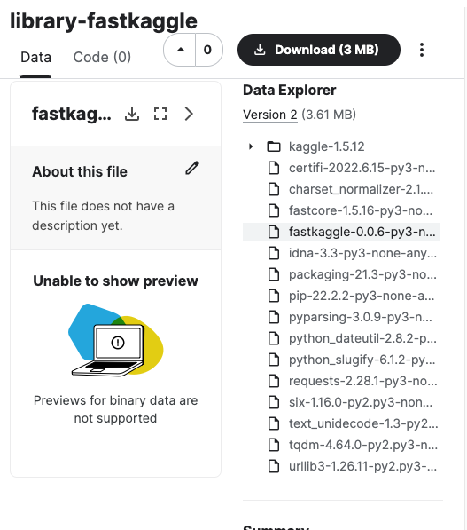
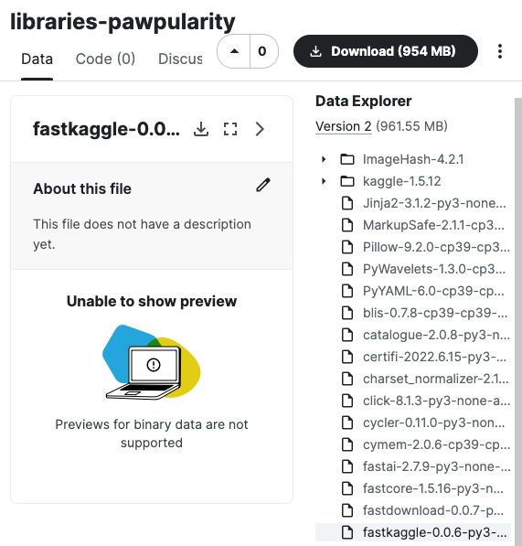

'Kaggle' if iskaggle else 'Not Kaggle''Not Kaggle'pip install fastkagglefastkaggle requires Python 3.10 or later, and version 2 or later of the kaggle API package. To use it you’ll need Kaggle API credentials, either in ~/.kaggle/kaggle.json (downloaded from your Kaggle account page) or in the KAGGLE_USERNAME and KAGGLE_KEY environment variables. On Kaggle itself, add kaggle_username and kaggle_key to your Kaggle secrets instead.
This little library is where I’ll be putting snippets of stuff which are useful on Kaggle. Functionality includes the following:
It defines iskaggle which is True if you’re running on Kaggle:
It provides a setup_comp function which gets a path to the data for a competition, downloading it if needed, and also installs any modules that might be missing or out of date if running on Kaggle:
There’s also competition_submit to submit a predictions file, push_notebook to push a notebook to Kaggle Notebooks, and import_kaggle to use the Kaggle API (even when you’re on Kaggle!) See the fastkaggle.core docs for details.
This section is designed to make uploading pip libraries to kaggle datasets easy. There’s 2 primary high level functions to be used. First we can define our kaggle username and the local path we want to use to store datasets when we create them.
The purpose of this is to create datasets that can be used in no internet inference competitions to install libraries using pip install -Uqq library --no-index --find-links=file:///kaggle/input/your_dataset/
We can take a list of libraries and upload them as separate datasets. For example the below will create a library-fastcore and library-timm dataset. If they already exist, it will push a new version if there is a more recent version available.
Processing fastcore as library-fastcore at /Users/isaacflath/kaggle_datasets/library-fastcore
-----Downloading or Creating Dataset
-----Checking dataset version against pip
-----Kaggle dataset already up to date 1.5.16 to 1.5.16
Processing flask as library-flask at /Users/isaacflath/kaggle_datasets/library-flask
-----Downloading or Creating Dataset
-----Checking dataset version against pip
-----Kaggle dataset already up to date 2.2.2 to 2.2.2
Processing fastkaggle as library-fastkaggle at /Users/isaacflath/kaggle_datasets/library-fastkaggle
-----Downloading or Creating Dataset
-----Checking dataset version against pip
-----Kaggle dataset already up to date 0.0.6 to 0.0.6
CompleteThis creates datasets in kaggle with the needed files. For example the library fastkaggle looks like this in kaggle.

We can also create a singular dataset with multiple libraries based on a requirements.txt file for the project. If there are any different files it will push a new version.
Processing libraries-pawpularity at /root/kaggle_datasets/libraries-pawpularity
-----Downloading or Creating Dataset
Data package template written to: /root/kaggle_datasets/libraries-pawpularity/dataset-metadata.json
-----Checking dataset version against pip
-----Updating libraries-pawpularity in Kaggle
CompleteThis creates a dataset in kaggle with the needed files.
